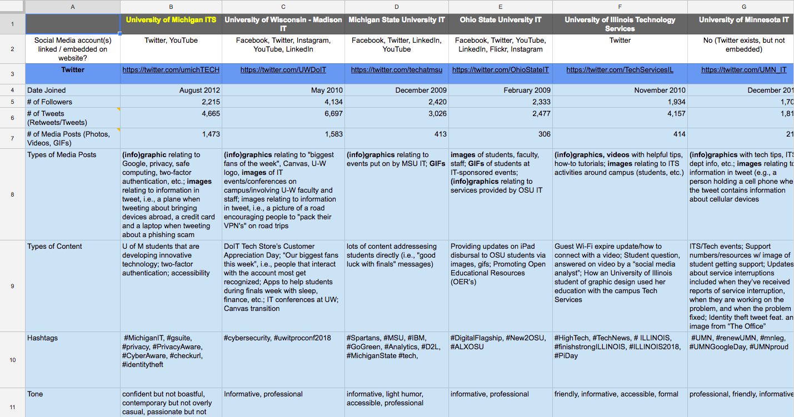
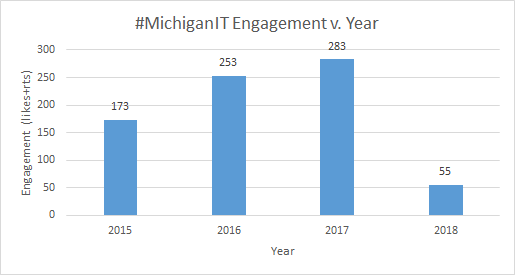

This data represents approximately the ITS Communications department fiscal year from July 2017 to July 2018. The exact dates are July 3rd, 2017 - June 4th, 2018.
In this context Engagement means number of favorites + number of retweets on a given Tweet.
I do not have the ability to pull the number of replies from the public Twitter API.
Out of 1,118 ITS tweets:
Safe Computing: 43.5% of tweets
Jobs, Training, and Events: 23.9% of tweets
Projects and Services: 18.2% of tweets
Campus News: 14.5% of tweets
Out of 3,118 ITS engagements:
Campus News: 47.2%
Safe Computing: 26.2%
Jobs, Training, and Events: 20.6%
Projects and Services: 6%
We most often post between noon and 10PM. As a result, those are the times the most engaged with tweets fall into - specifically between 12PM and 8PM. NOTE: I don't have data regarding when the engagements occured, only what time the posts with most engagements were made.
Random


Nothing surprising, but engagement with the #MichiganIT hashtag has increased annually. I suspect that it is due to the increase in number of tweets which use the hashtag.